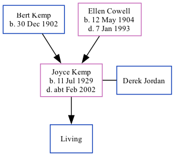

Joyce Margaret A Jordan (née Kemp) 1929 - c2002
[ Home ] | [ Calendar ] | [ Surnames Index ] | [ Family History ]The older of 2 children of Bert Kemp (a farm bailiff & tractor driver) and Ellen Cowell, Joyce Kemp, the second cousin once-removed on the mother's side of <a href="I1.html">Nigel Horne</a>, was born in Thanet, Kent, England on Jul 11, 1929<span class="citation">1,2,3</span> and. She married Derek Jordan (with whom she had 1 surviving child) in Thanet around Nov 1952<span class="citation">4</span>. On Sep 29, 1939, she lived at 6 Woodchurch Cottages, Margate, Kent, England<span class="citation">1</span>. <p>She died <i>c.</i> Feb 2002 in Thanet<span class="citation">3</span>.
Parents
- Bert E was born on Dec 30, 1902
- Ellen May was born on May 12, 1904
Citations
- 1939 Register - Findmypast (was the daughter of the head of the household)
- England & Wales births 1837-2006 - Findmypast
- England & Wales deaths 1837-2007 - Findmypast
- England & Wales Marriages 1837-2005 - Findmypast
Media
England & Wales births 1837-2006 - BMD/B/1929/3/AZ/000688/015
England & Wales marriages 1837-2005 - BMD/M/1952/4/AZ/000654/057
England & Wales deaths 1837-2007 - BMD/D/2002/1/85025271
1939 Register - TNA-R39-1752-1752A-002-26
Family Tree
Generated by Ged2Site. Last updated on Jul 20, 2025